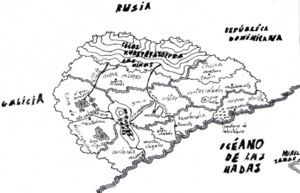

De: La Frikipedia, la enciclopedia extremadamente seria.
De: La Frikipedia, la enciclopedia extremadamente seria. De: La Frikipedia, la enciclopedia extremadamente seria.
| De la serie Países del planeta tierra: | |||||
| Sacro y Republicano Imperio Fachocomunista Promonarquricoindependentistaanarquista de Vahistolava Ajadu aajsh ajsoansoa aaaka dideolaodpdal aoduaaodudagdanaodi dk Vahistolava న విద్యార్ధి పోర ్ విజ్ఞాన సర బందర్లోను, రాజ్కోట్ | |||||
|---|---|---|---|---|---|
| |||||
| Lema: ¡Qué nadie se mueva! ¡Se me ha caido el cerebro! | |||||
| Himno: Repetir Vahistolava cien veces seguidas.
| |||||
| 
| |||||
| Capital | Vahistocity | ||||
| Mayor ciudad | Vahistocity | ||||
| Lenguas oficiales | Vahistolavo de arriba, Vahistolavo de abajo y recientemente el Habarahuski. | ||||
| Gobierno | Sacro y Republicano Imperio Fachocomunista Promonarquricoindependentistaanarquista | ||||
| Emperador | Vahistolavio XXV (por el culo te la hinco) | ||||
| Área | Cerca de Chaorikodistan. | ||||
| Población | 2 o 3 personas. | ||||
| Moneda | Vahistolero. | ||||
| Zona horaria | GTM +345 | ||||
| Dominio Internet | .vahistolava | ||||
| Código telefónico | 00684784
| ||||
| Viva Vahistolava | |||||
El Sacro y Republicano Imperio Fachocomunista Promonarquicoindependentistaanarquista de Vahistolava es una pequeña república o imperio o anarquía o lo que quiera que sea que se encuentra situada donde diox pego las tres voces y se le cayó la zandalia.
La historia de la noble nación de Vahistolava es larga y aburrida interesante. Sentaos hijos míos y os la contaré.
Antes de la llegada de los primeros Vahistolavos la tierra se hallaba habitada por fieros uzis y AK47s (armas propias de la época) para expulsar a los wombats de aquellas tierras. Tras 200 años de lucha los vahistolavos decidieron mantener relaciones diplomáticas con el líder de los wombats. Pero los vahistolavos por relaciones diplomáticas entienden mandar a un yonki con 50 kilos de C4 a dar un abrazo al líder enemigo. Tras esto los wombats dejaron para siempre las ricas tierras de Vahistolava.
Después de la expulsión de los wombats los vahistolavos empezaron a desarrollar una creciente economía. Así se construyó Vahistocity la 17º peor ciudad del mundo. Con el paso de los siglos los Vahistolavos fueron conquistados por los celtas, los sevillanos y por último los romanos. Estos últimos se fueron después de descubrir que Vahistolava no tenía espacio suficiente para construir un circo.
Después de que los romanos se pirasen Vahistolava cayó en manos de otra tribu germánica conocida como los Arogodos. Estos permanecieron en tierras vahistolavas hasta que el héroe nacional, Jhony el verdeamarillento, contrató a varios clanes de gitanos para expulsar a los cabrones Arogodos. A cambio de sus servicios Jhony mandó construir una ciudad para que vivieran solo los valientes gitanos. Hoy en día se sabe que eso fue una estratagema para mantenerlos alejados de las tierras civilizadas.
Tras el descubrimiento de américa las naves vahistolavas decidieron encaminarse al nuevo mundo... Por desgracia tres barcos de pesca no iban a llegar muy lejos así que se hundieron a mitad del camino, son conocidos como la gran armada invencible vahistolava.
Después de unos 20 años de anarquismo subió al poder Vahistolavio I, quien sufrió una revolución y su propia decapitación al 4º día de mandato. Le sucedió su hijo, Vahistolavio II, que consiguió mantenerse una semana seguida y después su hijo Vahistolavio III que duró 2 horas (le coronaron, le hicieron un convite y le decapitaron). Desde entonces han tenido 14 repúblicas, 3 dictaduras y 25 emperadores. La media de duración de un gobierno en Vahistolava son 5 días.
Actualmente gobierna en el país Vahistolavio XXV pero los revolucionarios ya están planeando como quitarle de enmedio.
ACTUALIZACIÓN, 21/04/09: El gobierno actual es de Vahistolavio XXVII, líder del grupo pseudo guerrillero que derrocó al gobierno psicobolche de Vahistolavio XXVI.
Los laboratorios de investigación Vahistolavos centran sus esfuerzos actualmente en desarrollar un método de abrir latas más sencillo que el abrefácil). Si has intentado abrir una lata últimamente habrás comprobado que no lo han conseguido.

«¿Cultura? ¿Arte? ¡¡¡Nooooo!!! ¡¡¡Esto es un maldito museo!!!»
~ Vahistolavo Sobre la cultura y el arte.
Vahistolava es famosa por su gran producción de tochos infumables que luego nadie lee. Su obra más conocida es 20 días comiendo tarta de manzana... si esa es la más conocida imaginaos las demás...
Vahistolava ha dado grandes compositores como El Koala o tu abuela.
En Vahistolava no existen obras arquitectónicas propiamente dichas, la gente vive en chabolas. El único edificio medianamente decente es el palacio imperial que tiene 200 habitaciones... a lo mejor por eso se sublevan tanto...
El mayor representante de la escultura vahistolava es sin duda Mariano Valistev, famoso escultor de mierdas pinchadas en un palo.
Y en pintura destacan geniales pintores como... como... bah da igual ya me acordaré de alguno.
La luz antinatural de la caja tonta aún no ha llegado hasta las lejanas tierras de Vahistolava para iluminar a sus habitantes.
Mayoritariamente se profesa el McCristianismo y además es la religión oficial del estado. Existen cientos de maciglesias repartidas por los confines del imperio/república/monarquía en las que los fieles comulgan con su señor macjesucristo. Esta religión fue traida por los invasores sevillanos durante la edad antigua.
También hay otras religiones minoritarias como el cerillismo, el pastafarismo, el frikipedismo o el feldespastismo
Como ya hemos dicho su capital es Vahistocity y es la 17º peor ciudad del mundo. Justo debajo de Sevilla. Fue fundada por un cura cristiano borracho que se construyó una iglesia en mitad de un pantano para tener un sitio donde tirarse a las feligresas. Poco a poco los vahistolavos se fueron asentando a su alrededor ya que allí encontraban hagua bendita en suficientes cantidades para subsistir.
Con la llegada de los celtas Vahistolava pasó a ser una monarquía comunista y derribaron la iglesia para construir el palacio del rey del pueblo. Más tarde, con la invasión de los sevillanos Vahistocity se llenó de canis y yonkis y la ciudad experimento su mayor auge en la historia gracias al contrabando de coloconio.
Poco hay que decir de economía... bastaría con decir que se dan hostias por un céntimo de lero.
Principalmente grandes plantaciones de hierbas con gran contenido en coca-cola.
La principal especie que se cría en Vahistolava es una de gran tonelaje en infinita molestia. Parecida a la vaca pero con aires de cabra conocida comúnmente como suegra.
En Vahistocity se pueden pescar gran cantidad de especies mutantes gracias los vertidos de su central nuclear nucelar, la palabra es nucelar. Algunas de estas especies son el boqueron de 50 metros o la anguila de seis cabezas (también conocida como Escila (si no os habéis leido la Odisea no vais a pillar el chiste)).
En sus ríos no se puede pescar debido a que la basura impide nadar a los peces. En cambio en los mares pueden encontrarse buenas presas como salmones.
Gracias a las cuadrillas de mierenses llegados desde Marquesina las prospecciones mineras de las montañas del norte de Vahistolaba rinden más que nunca. De ellas se extrae uranio para la central, acero para fabricar mondadientes y tungsteno para alimentar a los ejércitos de llaves alien.
Laboratorios ilegales de droga mayoritariamente y algún que otro taller de costura y confección.
La planta de energía nucelar de Vahistocity provee de energía suficiente para todo el palacio imperial. Sí, también podría suministrar al país entero, pero el emperador es un cabrón ¿Qué le vamos a hacer?
Aparte de eso cada ciudad de Vahistolava tiene su propio generador consistente en 20 monos amaestrados dándole vueltas a una rueda para que salgan chispitas. Luego esa energía será usada para iluminar la ciudad y cargar porras eléctricas para golpear a los monos que no trabajen. ¡Gloria al capitalismo simiesco!
La moneda oficial de Vahistolava es el Vahistolero que vale aproximadamente 0'000000000001 céntimos de lero. Actualmente el estado vahistolavo posee unos 100 vahistoleros, de ahí se puede apreciar la gran riqueza del país.
Normalmente comercian con Rusia, España o Andalucía. El comercio suele basarse en la compraventa de coloconio, tochos infumables y armas de destrucción masiva.
Como ya hemos dicho el 35% de la población vive en chavolas y el 64% restante en la puta calle. El 1% que sobra es la familia imperial que vive en su palacio de Vahistocity.
En Vahistolava existen variados medios de transporte:
La población actual de Vahistolaba oscila entre los 3 habitantes y los 30.000.000. No se pueden obtener cifras precisas debido a que los vagistolavos huyen de los encargados del censo al confundirlos con los de hacienda.
Están entre los 0 y los 10.000.000 suelen tener barba y una cosa que le cuelga entre las piernas.
Están entre las 2 y las 15.000.000 no suelen tener barba y tampoco les cuelga nada entre las piernas.
Están entre 1 y 5.000.000, ejemplos de cosas raras de Vahistolava:
En la parte sur siempre es verano y hace un calor torrido; en la parte oeste siempre es primavera y no deja de llover; en la parte este siempre es otoño y hay huracanes cada 20 minutos; en la parte norte siempre es invierno y hace 30 años que no para de nevar; y en la parte central las extrañas nubes radioactivas no dejan ver la luz del sol. Conclusión: si vas a hacer una ruta turística por todo el país meterse un tiro es mejor para la cabeza.
Se encuentra situado a 20 kilometros al este del País de Nunca Jamás a mitad de camino entre Aspaña y Madriz.
Al igual que el clima la geografía cambia mucho dependiendo del lugar en el que nos encontremos. En el norte están las altas montañas donde los vahistolavos tienen esclavizados a los mierenses para que trabajen en sus minas; al sur está el gran desierto donde Jhony metió a los gitanos; al este las tierras que hacen frontera con la República Dominicana; al este solo un montón de lagos; y en el centro grandes planicies producidas por las constantes explosiones nucleares.
Las más destacables son los picos Muereteyajoputa que se encuentran situados al norte de Vahistolava. Tales picos son famosos por sus infinitas minas y porque es en ellos donde nace el río Guadalvahisto. El pico más alto del país es el Sitevistonomacuerdo, con 6.700 metros de altura y 2.000 de profundidad.
El río más importante es el Guadalvahisto que recorre el país de punta a punta naciendo en las montañas Muereteyajoputa y desembocando en el Océano de las hadas. El río ya nace contaminado debido a la escoria que los mineros vierten en él y sigue su sucio trayecto hasta llegar a Vahistocity en donde se le vierte toda la basura de la ciudad incluidos los residuos nucleares; y baja hasta llegar a Tanosville donde los amables gitanos lo ensucian del todo.
El único mar de Vahistolava es el Océano de las hadas lugar por el que mantienen comercio marítimo con el País de Nunca Jamás (al que venden coloconio puro extraído de sus minas a cambio de polvo de hadas).
El desierto de Vahistolava es el gran desierto de la zona sur conocido como El Desierto de Joekekalojase. Habitado por Gitanoss desde que Jhony les exiliara a concediera los desiertos. También están habitados por canis y sevillanos.
En Vahistolava se hablan dos lenguas distintas dependiendo de la zona. En las zona norte, este y central se habla el vahistolavo de arriba mientras que en la zona oeste y sur se habla el vahistolavo de abajo. También consiguieron aprender unos niveles bajos del Habarahuski terrestre.
Ï Andyo-vahistolavese skai um xï eraro lrapan. Neuma dnerpmokkai um so. Mà sho kahkai um uma sa umahoso lrapkai um kilpxeneove. ¡¡¡Tnotaos!!!
వికీపీడియాకు మీ అవసరం ఉంది. రండి, చేతులు కలపండి. ఒక మహా సర్వస్వము తయారీలో మీరు కూడా భాగస్వాములు కండి. మీరు ఇక్కడ ఉన్న వ్యాసాలను మార్చవచ్చు, లేదా మీరే సొంతంగా క్రొత్త వ్యాసాలు మొదలు పెట్టవచ్చు. మీరు వ్యాసము వ్రాయుటకు ఏదైనా సహాయము కూడా తీసుకొనవచ్చును. మరిన్ని వివరాలకు తెలుగువికీ గూగుల్ గుంపు చూడండి.
వికీపీడియా ఎవరైనా కూర్చదగిన ఒక స్వేచ్ఛా విజ్ఞాన సర్వస్వము. ఇది మామూలు వెబ్ సైట్ల వంటిది కాదు. ఇక్కడ సమాచారాన్ని చూడటమే కాదు, ఉన్న సమాచారంలో అవసరమైన మార్పుచేర్పులు చెయ్యవచ్చు. ఇక్కడ లేని సమాచారాన్ని చేర్చవచ్చు కూడా. ప్రస్తుతం తెలుగు వికీపీడియాలో 37,840 వ్యాసాలున్నాయి. పూర్తి గణాంకాలు చూడండి.
మోహన్ దాస్ కరంచంద్ గాంధీ 1869 అక్టోబర్ 2న గుజరాత్లోని పోర్ బందర్లో ఒక సామాన్య సాంప్రదాయక కుటుంబములో జన్మించాడు. ఆయన తండ్రి పేరు కరంచంద్ గాంధీ. తల్లి పుతలీబాయి. వారిది ఆచారములు బాగా పాటించే సభ్య కుటుంబము.
మోహన్ దాస్ కరంచంద్ గాంధీ కాస్త నిదానముగా ఉండే బాలుడు. చిన్నతనమునుండీ అబద్ధాలు చెప్పే పరిస్థితులకు దూరముగా ఉండే ప్రయత్నము చేశాడు. 13 ఏండ్ల వయసులో అప్పటి ఆచారము ప్రకారము కస్తూర్బాయితో వివాహము జరిగింది. వీరికి నలుగురు పిల్లలు (హరిలాల్ గాంధీ, మణిలాల్ గాంధీ, రామదాస్ గాంధీ, దేవదాస్ గాంధీ) చదువులో గాంధీ మధ్యస్థమైన విద్యార్ధి. పోర్ బందర్లోను, రాజ్కోట్లోను ఆయన చదువు కొనసాగింది. 19 సంవత్సరాల వయసులో (1888 లో) న్యాయశాస్త్ర విద్యాభ్యాసానికి గాంధీ ఇంగ్లాండు వెళ్ళాడు. తల్లికిచ్చిన మాట ప్రకారము ఆయన మాంసానికి, మద్యానికి, స్త్రీ సాంగత్యానికి దూరంగా ఉన్నాడు. ఆయనకు బెర్నార్డ్ షా వంటి ఫేబియన్లతో పరిచయం ఏర్పడింది. అనేక మతాల పవిత్ర గ్రంధాలను చదివాడు. ఈ కాలములోనే ఆయన చదువూ, వ్యక్తిత్వమూ, ఆలోచనా సరళీ రూపు దిద్దుకొన్నాయి.
1891లో ఆయన పట్టభద్రుడై భారతదేశానికి తిరిగివచ్చాడు. బొంబాయిలోను, రాజ్కోట్ లోను ఆయన చేపట్టిన న్యాయవాద వృత్తి అంతగా రాణించలేదు. 1893లో దక్షిణాఫ్రికాలోని నాటల్లో ఒక లా కంపెనీలో సంవత్సరము కాంట్రాక్టు లభించింది. పూర్తివ్యాసం: పాతవి
Básicamente constituido por brigadas semi-voluntarias de llaves alien a las que se alimenta con tungsteno extraído de las montañas del norte.
Aparte de eso el emperador puede llamar a las armas a al ejercito de gitanos para defender la nación.
Malas, muy malas.
Todos los demás.
En las montañas del norte pueden encontrarse gran variedad de lobos gigantes y aliens-escupe-acido; en el sur normalmente cobras de 10 metros y cactus, muchos cactus; en los ríos y mares sardinas del tamaño de un portaaviones; y en las cercanías a Vahistocity gran cantidad de especies mutantes inclasificables.
Como no te hagas esclavo...
Vahistolava está dividida en 9 regiones. A saber:
Actualmente gobierna el emperador Vahistolavio XXV (por el culo te la hinco) con mano de hierro y en un régimen sacrorepublicanoimperialfachocomunistapromonarquricoindependentistaanarquista. Actualmente los grupos radicales planean despojarlo del poder por pura diversión y para que dejen de hacer la rima cada vez que dicen su nombre.
Los deportes nacionales de Vahistolava son el furbo y las peleas de patadas en los cojones.
La selección nacional de Vahistolaba (y a la vez el único equipo del país, el Vahistolava F.C.) está en alza. En los últimos 20 años ha pasado de ser la 197º mejor selección del mundo a ser la 195º este gran avance se debe agradecer a los 7 emperadores, 2 repúblicas y 1 dictadura que ha habido en esos años.
La gran cantidad de mutantes que pueden hallarse en Vahistolava son una perfecta fuente de alimento. Por no decir que el coloconio puro es una gran comida para personas de todas las edades. Además de eso el jefe de estado suele consumir grandes cantidades de señorio concentrado.
Muchas y todas gitanas. Gracias a McJesucristo que aún no han hecho efecto (se estarán agrupando para jodernos todas a la vez).
Aparte de las fechas comunes del calendario MacCristiano los vahistolavos tienen todo un mes de fiesta en recuerdo de las 32 revoluciones y/o golpes de estado acaecidas en su historia. Esta es otra razón para que la gente organice revoluciones ya que así ganan días de fiesta.
La sociedad vahistolava está compuesta por dos estratos.
De esta forma es mucho más sencillo de recordar.
¿Quieres hacer turismo en ese lugar dejado de la mano de dios? ¿Estás pirado? ¡Deja la droga!
Autor(es):